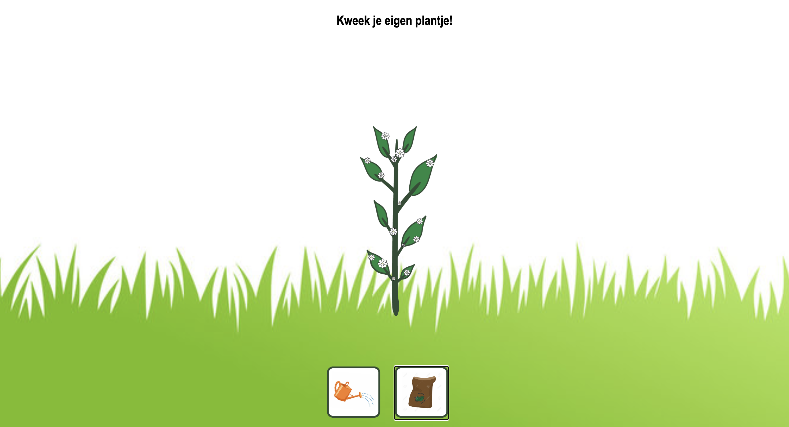

Tamagotchi plantje
Deze digitale Tamagotchi-plant is ontwikkeld met JavaScript, waarbij je een virtueel plantje kunt verzorgen en laten groeien. Wanneer je de plant water geeft, groeit deze langzaam steeds groter. Geef je hem daarnaast ook voeding, dan verschijnen er bloemetjes.
De animaties en interactieve elementen maken het een leuk spelletje om de plant te verzorgen. Dit project combineert JavaScript, CSS en HTML om een eenvoudige maar leuke simulatie te creëren, waarin je op een laagdrempelige manier bezig kunt zijn met het verzorgen van een plant.
Plantje kweken
